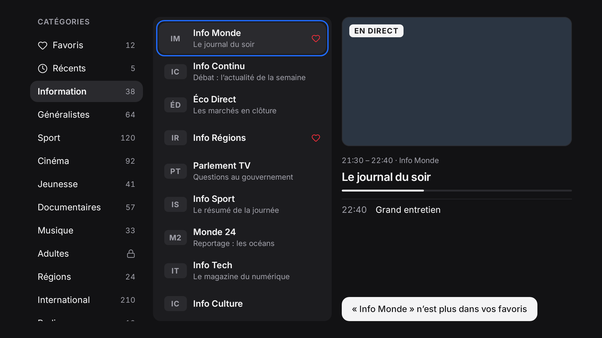
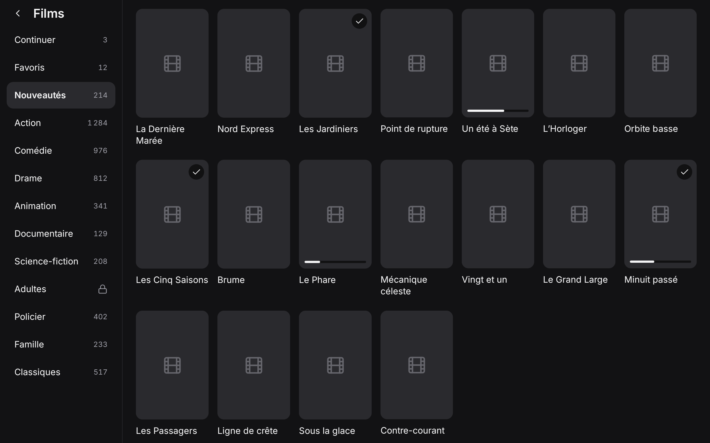
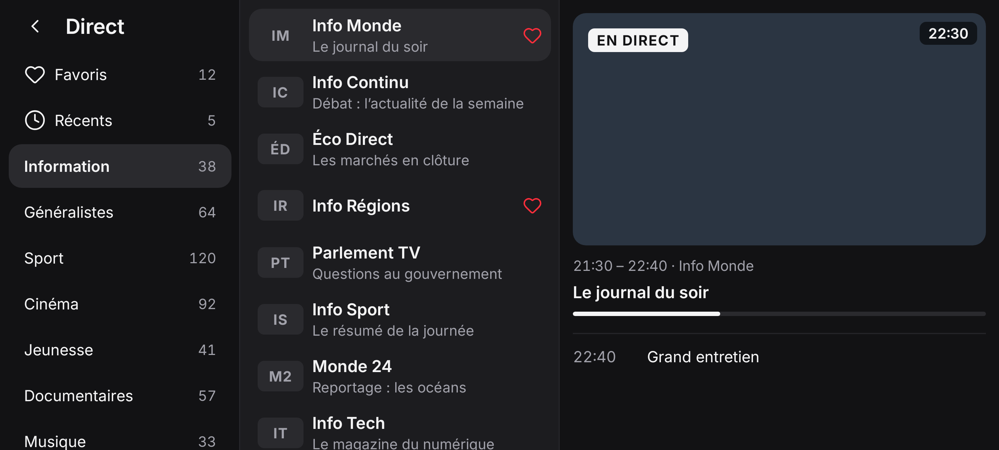

Un lecteur TV sobre et rapide, pour Android TV, tablette et téléphone.
Hey Stream lit les sources que vous apportez : chaînes en direct, films et séries, avec la télécommande. Sans compte ni publicité.
Hey Stream est uniquement un lecteur. Il ne fournit, ne vend ni ne recommande aucune chaîne, aucun flux ni aucun abonnement, et n’est lié à aucun fournisseur. Vous êtes responsable d’avoir le droit de regarder ce que vous ajoutez.



Ce que fait l’app
- Direct avec aperçuCatégories, chaînes et vidéo côte à côte ; programme en cours et suivant.
- Films et sériesReprise là où vous vous êtes arrêté, épisode suivant automatique.
- Favoris et récentsDans les trois sections, avec une recherche par nom.
- Contrôle parentalUn code protège les catégories que vous choisissez.
- Hors ligne d’abordLe catalogue est gardé sur l’appareil et mis à jour une fois par jour.
- Vos données restent chez vousPas de compte, pas de publicité, pas de mesure d’audience.
Bon à savoir
Compatible avec l’API Xtream Codes : vous saisissez l’adresse, l’identifiant et le mot de passe de votre source. Les versions actuelles sont des versions de test pour Android 11 et plus (dont Google TV). Logiciel libre sous licence GNU GPL 3.0 ou ultérieure.